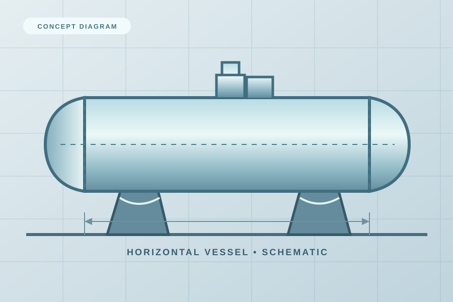

01 / The engineering problem
Pressure-vessel analysis involves more than calculating a shell thickness: assumptions, head configuration, supports, load cases and stress interpretation must be understood and cross-checked.

02 / What I worked on
This study uses manual code-based calculations alongside PV Elite and ANSYS Mechanical to compare the behavior of a horizontal vessel supported on saddles. The analysis considers code checks, support boundary conditions, and stresses under applied loads.
03 / Approach and workflow
04 / Original project evidence
These spaces are reserved for my actual engineering work: software screenshots, calculations, drawings, measured or simulated results, and explanatory captions. They have not been populated with invented findings.
05 / Engineering reflection
Manual design calculations, pressure-vessel software, and FEA do not automatically return the same quantity. The value of the analysis comes from comparing like-for-like results and explaining differences in assumptions, load combinations, and stress locations.
This case study can be expanded with verified figures and a short methods-and-results summary once the supporting materials are selected.